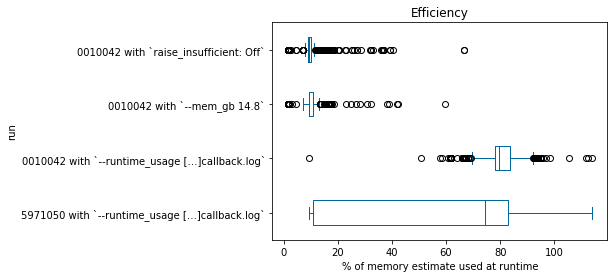
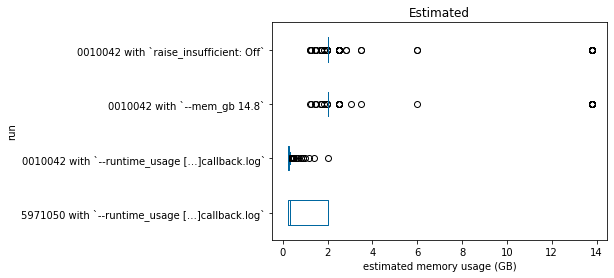
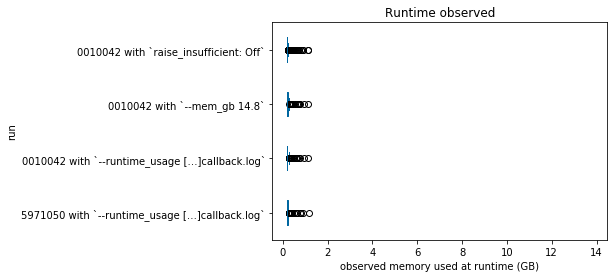

Visualize observed usage¶
This notebook includes the Python code used to generate the plots at the end of the observed usage BASH notebook.
[1]:
%matplotlib inline
import json
import os
import warnings
import numpy as np
import pandas as pd
from matplotlib import pyplot as plt
warnings.filterwarnings('ignore', category=np.VisibleDeprecationWarning)
PLOT_TEXT = {
'efficiency': ('Efficiency', '% of memory estimate used at runtime'),
'estimated_memory_gb': ('Estimated', 'estimated memory usage (GB)'),
'runtime_memory_gb': ('Runtime observed', 'observed memory used at runtime (GB)')
}
if not os.path.exists('./images'):
os.makedirs('./images')
class PlotText:
'''Class to hold plot title and axis labels
Parameters
----------
filter_field : str
Column of DataFrame to plot.
'''
def __init__(self, filter_field):
self.title, self.xlabel = PLOT_TEXT.get(filter_field, (filter_field, ''))
self.filename = filter_field.split('_', 1)[0]
def boxplot(filter_field, xlim=None):
'''Function to generate box-and-whisker plots
Parameters
----------
filter_field : str
xlim : 2-tuple or None
Returns
-------
xlim : 2-tuple
'''
fig_text = PlotText(filter_field)
fig, ax1 = plt.subplots()
box = the_dfs[filter_field].plot.box(vert=False, title=fig_text.title, ax=ax1, color='#0067a0')
if xlim:
plt.xlim(xlim)
if filter_field == 'efficiency':
ax1.axvline(x=100, color='#ea234b', linewidth=0, zorder=-100)
box.set_xlabel(fig_text.xlabel)
box.set_ylabel('run')
plt.savefig(f'./images/{fig_text.filename}.png', dpi=600, bbox_inches='tight')
return box.get_xlim()
def efficiency(df):
'''Function to create efficiency column and sort DataFrame by that column
Parameters
----------
df : pd.DataFrame
Returns
-------
pd.DataFrame
'''
df['efficiency'] = df['runtime_memory_gb'] / df['estimated_memory_gb'] * 100
df.sort_values(by='efficiency')
return df
def load_cbl(cbl):
'''Function to load callback.log into a DataFrame
Parameters
----------
cbl : str
path to callback log
Returns
-------
pd.DataFrame
'''
with open(cbl, 'r') as old_file:
return pd.DataFrame([
json.loads(line) for
line in old_file.readlines() if 'estimated_memory_gb' in line
])
[2]:
dfs = {
"0010042 with `raise_insufficient: Off`": load_cbl("cpac_runs/insufficient/log/pipeline_cpac_anat/sub-0010042_ses-1/callback.log"),
"0010042 with `--mem_gb 14.8`": load_cbl("cpac_runs/enough/log/pipeline_cpac_anat/sub-0010042_ses-1/callback.log"),
"0010042 with `--runtime_usage […]callback.log`": load_cbl("cpac_runs/optimized/log/pipeline_cpac_anat/sub-0010042_ses-1/callback.log"),
"5971050 with `--runtime_usage […]callback.log`": load_cbl("cpac_runs/optimized/log/pipeline_cpac_anat/sub-5971050_ses-1/callback.log"),
}
the_dfs = {
df_key: pd.DataFrame.from_dict({key: efficiency(dfs[key])[df_key] for key in list(dfs.keys())[::-1]})
for df_key in ['efficiency', 'runtime_memory_gb', 'estimated_memory_gb']
}
[3]:
xlim = boxplot('efficiency')

[4]:
xlim = boxplot('estimated_memory_gb')

[5]:
xlim = boxplot('runtime_memory_gb', xlim)
